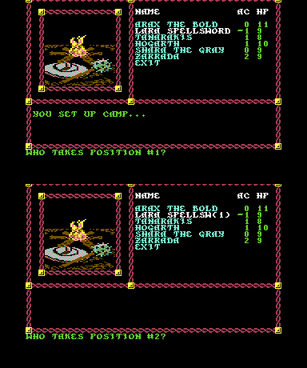
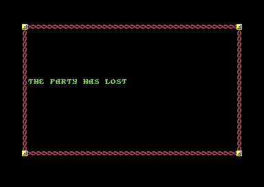

<meta charset="utf-8">
<meta name="viewport" content="width=device-width, initial-scale=1">
<title>Pool of Radiance · Discoveries</title>
<link rel="preconnect" href="https://fonts.googleapis.com">
<link rel="stylesheet" href="https://fonts.googleapis.com/css2?family=Lato:wght@400;700;900&family=IBM+Plex+Mono:wght@400;500&display=swap">
<style>
:root{
  --bg:#23262d; --paper:#e9e7e1; --surface:#ffffff; --surface-2:#f1efea; --line:#d5d3cc; --line-soft:#e0ded8;
  --ink:#2f3136; --ink-soft:#55585f; --ink-mute:#80838a;
  --link:#1f5fa8; --link-hover:#154480; --accent:#1f5fa8;
  --amber:#c25a00; --cyan:#1f5fa8; --coral:#d04a3a; --green:#2a8a4a; --violet:#4a5bd6; --hl:#fff0c2;
  --chip:#2f3136; --chip-ink:#ffffff;
  --c64blue:#40318d; --c64grey:#686868;
  --fd:'Lato',system-ui,sans-serif; --fb:'Lato',system-ui,sans-serif; --fm:'IBM Plex Mono',ui-monospace,Menlo,monospace;
  --col:1080px; --gx:68px; --fs:17px; --lh:1.6; --hw:900; --h1:46px; --h2:26px; --sy:48px; --pp:26px; --r:10px;
  --plate-shadow:0 1px 2px rgba(0,0,0,.05),0 4px 14px rgba(0,0,0,.05);
}
*{box-sizing:border-box}
html{background:var(--bg);min-height:100%}
body{background:var(--paper);color:var(--ink);font-family:var(--fb);font-size:var(--fs);line-height:var(--lh);max-width:var(--col);margin:0 auto;min-height:100vh;padding:0 0 4rem}
h1,h2,h3{font-weight:var(--hw);letter-spacing:-.01em;text-wrap:balance;color:var(--ink);margin:0}
.wrap{padding:0 var(--gx)}
.hero{padding:48px var(--gx) 8px;text-align:left}
.eyebrow{font-family:var(--fm);font-size:12px;letter-spacing:.08em;text-transform:uppercase;color:var(--ink-mute);margin:0 0 10px}
.hero h1{font-size:var(--h1);line-height:1.15;letter-spacing:-.02em;margin:0 0 14px}
.hero .sub{margin:0 0 .6em;color:var(--ink-soft)}
section{padding:var(--sy) 0 24px}
section:last-of-type{border-bottom:none}
.fig{font-family:var(--fm);font-size:12px;letter-spacing:.08em;text-transform:uppercase;color:var(--ink-mute);margin:0 0 10px}
h2.t{font-size:var(--h2);margin-bottom:12px}
.lede{color:var(--ink-soft);margin:0 0 30px}
.plate{background:var(--surface);border:1px solid var(--line);border-radius:var(--r);padding:var(--pp);box-shadow:var(--plate-shadow)}
.cap{font-size:14px;color:var(--ink-mute);margin-top:14px;line-height:1.55}
.cap b{color:var(--ink);font-weight:700}
code{font-family:var(--fm);font-size:.82em;background:var(--chip);color:var(--chip-ink);border-radius:4px;padding:2px 6px;white-space:nowrap}

.por-tbl{border-collapse:collapse;width:100%;font-size:14.5px;margin:10px 0}
.por-tbl th,.por-tbl td{border-bottom:1px solid var(--line-soft);padding:6px 8px;text-align:left;vertical-align:top}
.por-tbl th{font-family:var(--fm);font-size:11.5px;text-transform:uppercase;letter-spacing:.06em;color:var(--ink-mute);font-weight:500}
.por-m{font-family:var(--fm);font-size:.86em}
.por-two{display:grid;grid-template-columns:minmax(0,1fr) minmax(0,1fr);gap:18px;align-items:start}
.por-out{font-family:var(--fm);font-size:13px;background:var(--surface-2);border-radius:6px;padding:10px 12px;margin-top:12px;min-height:3.2em;white-space:pre-wrap}
.por-btns{display:flex;flex-wrap:wrap;gap:6px;margin:0 0 12px}
.por-btn{font-family:var(--fm);font-size:12.5px;border:1px solid var(--line);background:var(--surface);color:var(--ink);border-radius:6px;padding:5px 10px;cursor:pointer}
.por-btn[aria-pressed="true"]{background:var(--ink);color:#fff;border-color:var(--ink)}
.por-name{font-weight:700;margin:0 0 6px}
.por-btn:disabled{opacity:.4;cursor:default}
.por-fx{display:inline-block;font-family:var(--fm);font-size:12px;border:1px solid var(--line);background:var(--surface-2);border-radius:5px;padding:1px 7px;margin:0 6px 4px 0}
.por-fx.wrong{background:#fbe3df;border-color:var(--coral);color:#8a2a1e;font-weight:700}
.por-shot{margin:18px 0 0}
.por-shot img{width:100%;max-width:384px;image-rendering:pixelated;border-radius:4px;display:block}
.por-shot figcaption{font-size:13px;color:var(--ink-mute);margin-top:6px;line-height:1.4}
@media (max-width:760px){.por-two{grid-template-columns:1fr}:root{--gx:18px}}
</style>
<!-- tabs -->
<header class="hero">
  <p class="eyebrow">1988 · SSI</p>
  <h1>Pool of Radiance</h1>
  <p class="sub">Bugs and secrets in the code: a change of marching order that moves spells onto the wrong people, jewelry that never doubles, a month in camp that ages nobody more than a day, and a town where nobody may sleep.</p>
</header>
<main class="wrap">

<section data-part="camp">
  <p class="fig">01 · The marching order</p>
  <h2 class="t">Bug: Changing the marching order can move a spell onto someone else</h2>
  <p class="lede">A spell that lasts a while is kept in a list of the effects in play, each with the party position of the member it is on. ORDER, in the camp's ALTER menu, moves those effects along when the party changes places, but it moves them one member at a time in the same list. An effect handed to a member who has not been dealt with yet gets handed on again when that member's turn comes.</p>
  <div class="plate">
    <div class="por-two">
      <div>
        <p class="por-name" id="por-ask">Who takes position #1?</p>
        <div class="por-btns" id="por-who"></div>
        <div class="por-btns">
          <button type="button" class="por-btn" id="por-undo">Take back</button>
          <button type="button" class="por-btn" id="por-swap">Lara first, Arax second</button>
          <button type="button" class="por-btn" id="por-rev">Turn the party round</button>
        </div>
      </div>
      <div>
        <table class="por-tbl" id="por-ord"><thead><tr><th>Position</th><th>Member</th><th>Effects on them afterwards</th></tr></thead><tbody></tbody></table>
      </div>
    </div>
    <div class="por-out" id="por-ord-out"></div>
    <p class="cap">The party the game comes with, as its saved game on the first disk has it, each member carrying one effect of its own. Choose who takes each position, as ORDER asks. The effects are then moved as the camp's code moves them (<code>$0AF9</code>, the code's address in memory): from the last position to the first, every effect on a member's old position goes to its new position.</p>
  </div>
  <p>Putting Lara Spellsword first and Arax the Bold second is enough. Lara's effect goes from position 2 to position 1, where Arax still is. Then Arax is moved to position 2 and takes everything on position 1 with him, Lara's effect included. In the game, with an effect put on Lara and the order changed that way, the game's list of effects had it on Arax afterwards.</p>
  <figure class="por-shot">
    
    <figcaption>ORDER in the camp: the first question, and the second after Lara Spellsword has taken position 1.</figcaption>
  </figure>
</section>

<section data-part="post-com">
  <p class="fig">02 · Treasure</p>
  <h2 class="t">Bug: Jewelry is never worth double</h2>
  <p class="lede">When a treasure holds gems or jewelry, each piece is given a worth as the party picks it up. A gem's worth can double, and double again, with a chance of one in ten each time. Jewelry has the same doubling written for it, and it never happens.</p>
  <div class="plate">
    <table class="por-tbl">
      <thead><tr><th>Piece</th><th>Doubles while</th><th>Out of 2,000 pieces</th></tr></thead>
      <tbody>
        <tr><td>Gem</td><td>a roll of 0 to 9 comes up 0</td><td>1,809 kept their worth, 172 doubled, 17 doubled twice, 2 three times</td></tr>
        <tr><td>Jewelry, the four cheaper kinds</td><td>a roll of 1 to 9 comes up 0</td><td>all 2,000 kept their worth</td></tr>
        <tr><td>Jewelry, the three dearer kinds</td><td>a roll of 1 to 4 comes up 0</td><td>all 2,000 kept their worth</td></tr>
      </tbody>
    </table>
    <p class="cap">The game's own code for each, run 2,000 times from different random numbers: the gem's loop (<code>$1C80</code>) and the jewelry's (<code>$1CE6</code>) for each of its seven kinds.</p>
  </div>
  <p>The gem's loop asks the random number routine for a number from 0 to 9 (<span data-part="resident"><code>$2DBC</code></span>), and doubles while it gets 0. The jewelry's loop asks a different routine, the one that rolls a die (<span data-part="resident"><code>$2DE0</code></span>), and doubles while that gives 0. A die starts at 1, so the loop ends on the first roll every time. A gem starts at a worth of 10 to 5,000, a piece of jewelry at 100 to 12,000.</p>
</section>

<section data-part="camp">
  <p class="fig">03 · Time</p>
  <h2 class="t">Bug: A month of rest in camp ages the party one day</h2>
  <p class="lede">The party grows older as it plays. After every battle the game adds the days that have gone by to each member's age, and a member past the limit for its race dies of old age: 80 years for a half-orc, 120 for a human. Resting in camp heals each member one hit point a day, so healing can take weeks, and the camp hardly counts them.</p>
  <div class="plate">
    <table class="por-tbl">
      <thead><tr><th>Where the time passes</th><th>Days gone by go up</th><th>Code</th></tr></thead>
      <tbody>
        <tr><td>Walking in town, in the dungeons and outdoors</td><td>each time the clock's day moves on</td><td><span data-part="tables"><code>$7A5F</code></span></td></tr>
        <tr><td>Resting in camp</td><td>each time the clock's day goes round from 30 to 0, once a month</td><td><code>$125A</code></td></tr>
      </tbody>
    </table>
    <p class="cap">The clock keeps minutes, tens of minutes, hours, days and months as figures of their own, each with the number it comes round at (<code>$127D</code>). Both routines watch the day figure, but the adventure's counts when it moves and the camp's only when it comes back round to 0. The ages are added after each battle (<span data-part="post-com"><code>$1E1B</code></span>).</p>
  </div>
  <p>In the game, a rest of one day in the slums moved the clock on a day and left the count of days gone by at 0. One step in New Phlan with the clock at 23:59 put it at 1. A party can rest for thirty days and grow one day older.</p>
</section>

<section data-part="dungeon">
  <p class="fig">04 · New Phlan</p>
  <h2 class="t">Secret: Nobody can rest in New Phlan</h2>
  <p class="lede">Make camp anywhere inside the town and the rest stops after five minutes with YOU ARE ROUSTED BY THE CITY WATCH AND TOLD TO MOVE ALONG. It is not a random encounter that happens to come up every time.</p>
  <p>The town's script sets the chance of the rest being interrupted to 101 in 100 whenever the party makes camp, so the camp's roll of 0 to 99 can never beat it, and the script's own fourth entry is the watch. The How it works page shows the script itself (<a href="index.html#por-scripts">the scripts</a>). In the slums outside the town, a rest of a whole day went through.</p>
</section>

<section data-part="post-com">
  <p class="fig">05 · The end</p>
  <h2 class="t">Secret: Losing a battle freezes the game for good</h2>
  <p class="lede">There is no screen offering another try. As a rule, when a battle leaves nobody in the party standing and nobody got away, the game prints THE PARTY HAS LOST, waits, and then runs a single instruction that jumps to itself (<code>$0957</code>), forever. The only way out is to reset the computer and load a saved game.</p>
  <div class="plate por-two">
    <figure class="por-shot">
      
      <figcaption>The last thing a lost game shows.</figcaption>
    </figure>
    <p class="cap">The code word at the start ends a game the same way. Before play the title shows runes and a path and asks for the word the code wheel in the box gives for them. A wrong word brings WRONG !!! and another question; a second wrong word brings WRONG !!! again and the same kind of jump to itself (<span data-part="title"><code>$12F4</code></span>).</p>
  </div>
</section>

<section data-part="dungeon">
  <p class="fig">06 · The scripts</p>
  <h2 class="t">Bug: Three script commands would be skipped wrongly after an IF</h2>
  <p class="lede">The script language has six IF commands. When an IF fails, the next command is skipped, and to skip it the game looks up how many operands it has in a table (<code>$1625</code>). For three commands the table is one short.</p>
  <div class="plate">
    <table class="por-tbl">
      <thead><tr><th>Command</th><th>Operands its routine reads</th><th>The table says</th></tr></thead>
      <tbody>
        <tr><td>SETUP MONSTER (12)</td><td>3</td><td>2</td></tr>
        <tr><td>ENCOUNTER MENU (41)</td><td>14</td><td>13</td></tr>
        <tr><td>ADD NPC (54)</td><td>2</td><td>1</td></tr>
      </tbody>
    </table>
    <p class="cap">The command's number in brackets. Skipping one of them after a failed IF would stop one operand short, and the game would read that operand as the next command.</p>
  </div>
  <p>It never shows. Decoded command by command, none of the scripts on the game's disks puts any of the three straight after an IF.</p>
</section>

</main>
<footer style="margin:16px 0 0;padding:22px var(--gx) 0;border-top:1px solid #e0ded8;font-family:'IBM Plex Mono',ui-monospace,Menlo,monospace;font-size:12px;color:#80838a"><a href="https://github.com/gamesexplained/gamesexplained" style="color:#1f5fa8;text-decoration:none">GitHub</a> · <a href="https://discord.gg/3V9GWyRDWV" style="color:#1f5fa8;text-decoration:none">Discord</a><br>© Games Explained contributors. Write-ups, facts and symbol maps are available under <a href="https://creativecommons.org/licenses/by-sa/4.0/" style="color:#1f5fa8;text-decoration:none">CC BY-SA 4.0</a>; code under <a href="https://opensource.org/licenses/MIT" style="color:#1f5fa8;text-decoration:none">MIT</a></footer>
<script>
/* por-order */
// ORDER's move of the timed effects (camp $0AF9-$0B18): from party slot 7 down, every effect whose
// holder ($4940) is a member's old slot is given its new slot ($28CE; bit 7 set, no member), all in
// the one column, so an effect already moved to a lower slot is moved again when that slot comes round.
function porOrder(newPos, holders) {
  const h = holders.slice();
  for (let x = 7; x >= 0; x--) {
    const p = newPos[x];
    if (p === undefined || p & 0x80) continue;
    for (let k = h.length - 1; k >= 0; k--) if (h[k] === x) h[k] = p;
  }
  return h;
}
// end of por-order

(() => {
  const PARTY = ['Arax the Bold', 'Lara Spellsword', 'Tanarakis', 'Hogarth', 'Shara the Gray', 'Zarrada'];
  const $ = (id) => document.getElementById(id);
  const own = (i) => PARTY[i].split(' ')[0] + "'s";
  let order = [1, 0, 2, 3, 4, 5];   // order[p]: the old place of the member who takes position p
  const who = $('por-who'), body = $('por-ord').tBodies[0], out = $('por-ord-out');
  const draw = () => {
    const done = order.length === PARTY.length;
    $('por-ask').textContent = done ? 'Every position taken.' : 'Who takes position #' + (order.length + 1) + '?';
    who.innerHTML = '';
    PARTY.forEach((n, i) => {
      const b = document.createElement('button');
      b.type = 'button'; b.className = 'por-btn'; b.textContent = n;
      b.disabled = order.includes(i);
      b.addEventListener('click', () => { order.push(i); draw(); });
      who.appendChild(b);
    });
    let held = null;
    if (done) {
      const newPos = Array(8).fill(0xFF);
      order.forEach((old, p) => { newPos[old] = p; });
      held = porOrder(newPos, PARTY.map((_, i) => i));
    }
    body.innerHTML = '';
    order.forEach((old, p) => {
      const tr = document.createElement('tr');
      tr.innerHTML = '<td>' + (p + 1) + '</td><td></td><td></td>';
      tr.children[1].textContent = PARTY[old];
      if (held) held.forEach((h, k) => {
        if (h !== p) return;
        const s = document.createElement('span');
        s.className = 'por-fx' + (k === old ? '' : ' wrong');
        s.textContent = own(k);
        tr.children[2].appendChild(s);
      });
      else tr.children[2].textContent = '…';
      body.appendChild(tr);
    });
    if (!held) { out.textContent = 'Choose the rest of the order.'; return; }
    const moved = held.map((h, k) => [k, order[h]]).filter(([k, m]) => k !== m);
    out.textContent = moved.length
      ? moved.map(([k, m]) => own(k) + ' effect is now on ' + PARTY[m] + '.').join('\n')
      : 'Every effect stayed with its member.';
  };
  $('por-undo').addEventListener('click', () => { order.pop(); draw(); });
  $('por-swap').addEventListener('click', () => { order = [1, 0, 2, 3, 4, 5]; draw(); });
  $('por-rev').addEventListener('click', () => { order = [5, 4, 3, 2, 1, 0]; draw(); });
  draw();
})();
</script>
